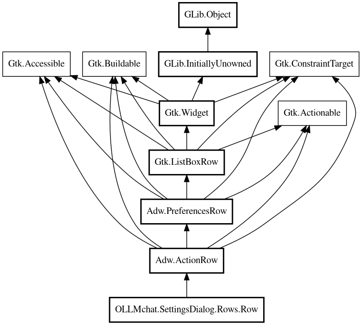

Row
Object Hierarchy:

Description:
public abstract class Row : ActionRow
Base class for all config widget classes.
Extends Adw.ActionRow and provides common functionality for property binding, getting nick/blurb from pspec, and common widget setup.
Also provides Auto/clear button functionality for option rows that support auto mode.
Since:
1.0
Content:
Properties:
- public Object config { get; construct; }
The config object that contains this property.
- public MainDialog dialog { get; construct; }
The settings dialog (for accessing config, etc.)
- public ParamSpec pspec { get; construct; }
The property spec for this widget.
- protected Widget? value_widget { public get; public set; }
The value widget (SpinButton, Entry, etc.) that should be
shown/hidden. Used by option rows with Auto/clear functionality.
Creation methods:
- protected Row (MainDialog dialog, Object config, ParamSpec pspec)
Creates a new Row.
Methods:
- public virtual void apply_property (Object obj)
Applies the widget's current value to the given object's property.
- protected virtual bool is_default (Value value)
Checks if the current value is in default/auto state (unset).
- public virtual void load_config (Object config)
Loads the widget's value from the config object.
- public virtual void load_options (Options options)
Loads the widget's value from the options object.
- public virtual void set_model_value (Value value)
Sets the model's default value from a Value object.
- protected virtual void set_start_value ()
Sets the value widget to its starting value when user begins editing.
Uses model_value if set, otherwise uses hardcoded default_value.
- protected void set_to_auto ()
Hides value widget and clear button, shows Auto button.
- protected void set_to_default ()
Shows the value widget (hides Auto button) and sets it to starting
value.
- protected void setup_auto_clear_buttons ()
Sets up Auto/clear button functionality for option rows.
- protected abstract void setup_widget ()
Sets up the widget after construction.
Fields:
- protected Button auto_button
Auto/clear button widgets (used by option rows).
- protected Box button_box
- protected Button clear_button
- public bool loading_config
Flag to prevent signal handlers from firing during programmatic
updates. Set to true before programmatically setting widget values, false after.
Inherited Members:
All known members inherited from class Adw.ActionRow
- activatable_widget
- activate
- activated
- add_prefix
- add_suffix
- get_activatable_widget
- get_icon_name
- get_subtitle
- get_subtitle_lines
- get_subtitle_selectable
- get_title_lines
- icon_name
- remove
- set_activatable_widget
- set_icon_name
- set_subtitle
- set_subtitle_lines
- set_subtitle_selectable
- set_title_lines
- subtitle
- subtitle_lines
- subtitle_selectable
- title_lines
All known members inherited from class Adw.PreferencesRow
- get_title
- get_title_selectable
- get_use_markup
- get_use_underline
- set_title
- set_title_selectable
- set_use_markup
- set_use_underline
- title
- title_selectable
- use_markup
- use_underline
All known members inherited from class Gtk.ListBoxRow
- activatable
- activate
- changed
- child
- get_activatable
- get_child
- get_header
- get_index
- get_selectable
- is_selected
- selectable
- set_activatable
- set_child
- set_header
- set_selectable
All known members inherited from class Gtk.Widget
All known members inherited from class GLib.Object
- @get
- @new
- @ref
- @set
- add_toggle_ref
- add_weak_pointer
- bind_property
- connect
- constructed
- disconnect
- dispose
- dup_data
- dup_qdata
- force_floating
- freeze_notify
- get_class
- get_data
- get_property
- get_qdata
- get_type
- getv
- interface_find_property
- interface_install_property
- interface_list_properties
- is_floating
- new_valist
- new_with_properties
- newv
- notify
- notify_property
- ref_count
- ref_sink
- remove_toggle_ref
- remove_weak_pointer
- replace_data
- replace_qdata
- set_data
- set_data_full
- set_property
- set_qdata
- set_qdata_full
- set_valist
- setv
- steal_data
- steal_qdata
- thaw_notify
- unref
- watch_closure
- weak_ref
- weak_unref
All known members inherited from interface Gtk.Accessible
- accessible_role
- announce
- get_accessible_parent
- get_accessible_role
- get_at_context
- get_bounds
- get_first_accessible_child
- get_next_accessible_sibling
- get_platform_state
- reset_property
- reset_relation
- reset_state
- set_accessible_parent
- update_next_accessible_sibling
- update_property
- update_property_value
- update_relation
- update_relation_value
- update_state
- update_state_value
All known members inherited from interface Gtk.Actionable
- action_name
- action_target
- get_action_name
- get_action_target_value
- set_action_name
- set_action_target
- set_action_target_value
- set_detailed_action_name
All known members inherited from interface Gtk.Buildable
- add_child
- custom_finished
- custom_tag_end
- custom_tag_start
- get_buildable_id
- get_id
- get_internal_child
- parser_finished
- set_buildable_property
- set_id